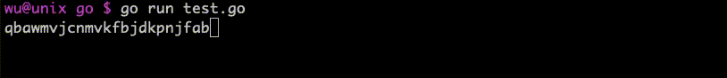

命令行覆盖刷新输出的效果如下图。

覆盖刷新的原理：删除已输出字符（用空白字符屏蔽），重新输出新字符。
删除字符需要用到一个特殊字符\b退格符。注意：在很多语言里语言\b退格符跟键盘上的 Backspace 键不太一样，退格符仅仅是回退，并不会删除字符，因此回退后还需要使用一个空白字符覆盖原有字符，才能完成覆盖刷新功能。示例如下：
// go 1.16
package main
import (
"fmt"
"math/rand"
"time"
)
func str() string {
rand.Seed(time.Now().UnixNano())
strLen := rand.Intn(50)
chars := "abcdefghijklmnopqrstuvwxyzABCDEFGHIJKLMNOPQRST0123456789"
var ret []byte
for i := 0; i < strLen; i++ {
ret = append(ret, chars[rand.Intn(len(chars))])
}
return string(ret)
}
func clear(s string) {
for i := 0; i < len(s); i++ {
fmt.Print("\b \b")
}
}
func main() {
for i := 0; i < 100; i++ {
s := str()
fmt.Print(s)
time.Sleep(time.Millisecond * 200)
clear(s)
}
}
在 Go 语言中，其实fmt.Print("\b \b")有些多余，只需要fmt.Print("\b")即可。如果不确定使用的语言\b的行为如何，就统一用\b \b。
在 ASCII 中，除了\b外，还有一个\r回车符也有相似能力。因此我们还可以将func clear(s string)函数修改成如下形式：
// go 1.16
func clear(s string) {
fmt.Print("\r")
for i := 0; i < len(s); i++ {
fmt.Print(" ")
}
fmt.Print("\r")
}
有某些语言里可能没有\b转义字符，例如 PHP，可以通过字符编码获取退格字符，编码为8。因此，在 PHP 中，可以将clear函数改成如下形式。
<?php
// php7.1
function clear($str) {
for ($i = 0; $i < strlen($str); $i++) {
echo chr(8), ' ', chr(8);
}
}